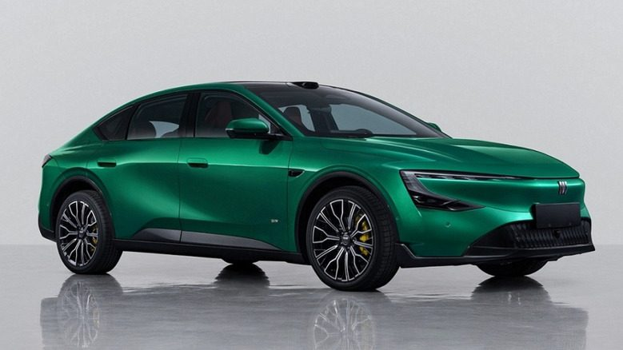
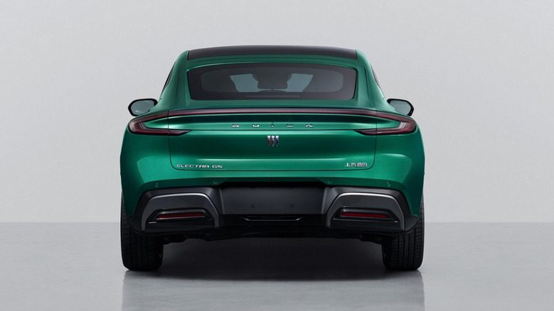

Buick · 新車 · 中國2026-11-04
Buick Electra GS 量產版曝光：概念車縮短 32 公分，改成掀背
China's Buick Electra GS Is A Stylish Hybrid America Can't Have
中國工信部（MIIT）公布 Buick Electra GS 量產版資料：這台插電混合動力斜背轎車由 2025 上海車展概念車而來，車長 4,980mm，比概念車短了 320mm，軸距也由 3,200mm 縮到 2,865mm。外觀改動不小，美國市場不會引進。
設計解析 Design Notes
- 比例車長與軸距大幅縮短，從概念車的大型 GT 比例收斂成中型轎車尺度，但保留斜背側面輪廓。
- 燈號LED 頭燈上下翻轉配置，Buick 廠徽從引擎蓋移到前保桿上，車身同色塑件減少。
- 法規因應中國即將禁用隱藏彈出式門把，概念車的門把被取消。
- 實用性概念車的傳統行李廂蓋改成掀背尾門，尾燈也重新設計，車尾寫上「Buick」字樣。
- 品牌方向報導認為概念車前臉太像 Tesla Model 3，量產版較不像，但也少了一些吸睛感。